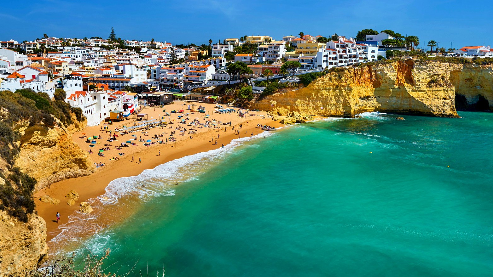

The Culture of Portugal
Portugal is known for its rich cultural heritage, with influences from its long history as a maritime nation. Its cuisine, music, and traditions reflect its unique blend of influences from Europe, Africa, and beyond.

Fado Music
Fado is a genre of Portuguese music characterized by its melancholic and soulful melodies. It often includes themes of longing, loss, and nostalgia.

Portuguese Cuisine
Portuguese cuisine is diverse and flavorful, with seafood being a staple. Traditional dishes like bacalhau (salted cod) and pastel de nata (custard tart) are beloved worldwide.